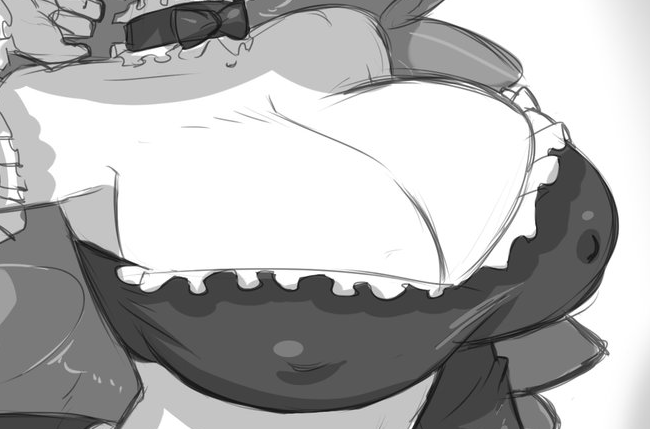
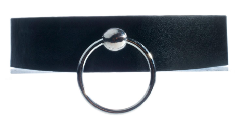
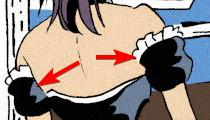
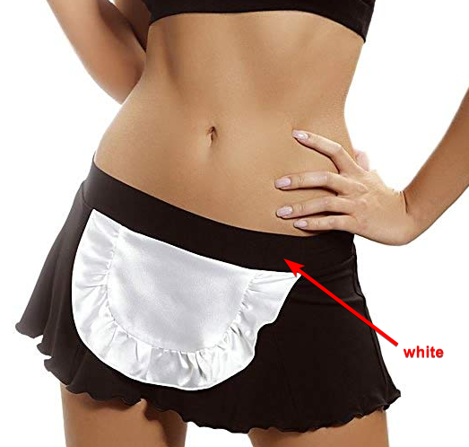
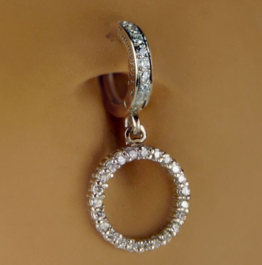
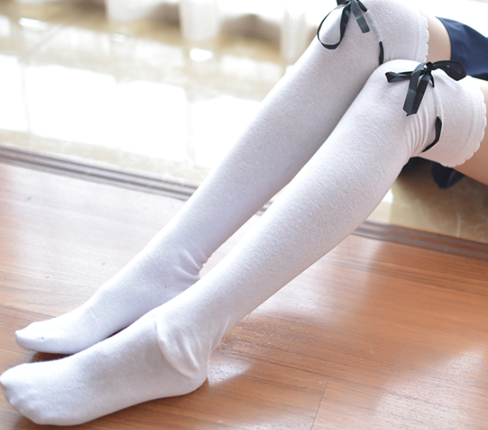
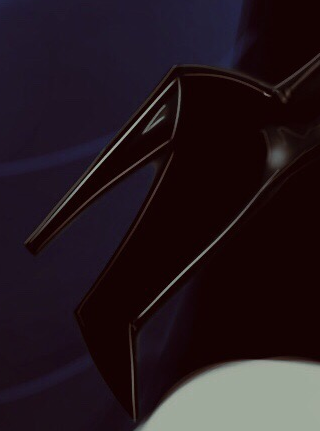
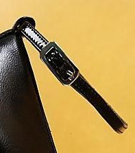

Description
Summary of the Maid as observed (click to open)
The maid is a petite unfinished cyborg, created initially for clearing out trash and leaving no traces behind. The creator's whereabouts remain unknown and is implied to have suffered the same fate as all who where unfortunate enough to cross her path.
The maid uses her mouth like a vacuum to suck things into her belly, more often than not, against her will or without prior knowledge of her actions resulting in seemingly accidental scenarios. Things can only enter her system through her mouth, and exit out through her derriere. Speaking of which, this seems to always result in forceful farts, albeit not as uncommon as once tought given all the other women who have shown to have similar vorish appetites sharing the same ability in this world. Compressing down contents seems to convert mass on to her frame, in some instances making the problem worse, as the larger she becomes, the less control people have around her.
Despite her nightmare-fuel implications, it has been observed that she has a gentle demeanour, not resorting to fill her belly whenever she has the chance. One can make the argument she does things to help man-kind, but something always seems to go wrong, ending in the unfortunate disappearence of anything in front of her.
Curious to note, aside from its primary function of disposal, the maid was slated to be mass produced and earn the creator heaps of money, by creating copies of itself - each new copy better than the last with the added bonus of completing some of the modules/components missing from its predecessor.
Upon investigation of the creator's abode, it has been foundthat the original copy has the following missing components;
- Speech: the ability to speak like a human
- Smart gadget management: the ability for the maid to instinctively know when a module has had changes done to it
- Frame miniaturisation: the ability to rescale herself without losing any of the gains
- Selective inventory reproduction: the ability to selectively reproduce anything she has compressed down at will
- Strength accumulation: the ability to transform or accumulate added strength to support herself better
- Expulsion control: the ability to temper the potency of whatever comes out the back
Functions
The maid has had numerous augments to her body to grant her the abilities she has.
An example of some of these functions in action has been illustrated by paisley2themax here.
In no particular order, click arrows to reveal more info;
| # |
Function |
| 1 |
Night Vision
The maid can see in the dark, giving off a cartoonish outline or her eyes in the dark.
|
| 2 |
Suction (Normal | MAX)
Her mouth stretches bigger to initiate her vacuum procedure, sucking in stuff in front of her. This can be done at her own volition, with ease. Vacuumed objects will be compacted into her belly, also giving her a muffin-top. If she were to either burp, hiccup, pout her lips or exhale deeply, it would also activate her vacuum mouth. Rubbing her belly while full has also seemed to result in the vacuum being triggered. The bigger she is from normal height, the more effective and larger in scale her mouth deforms. She has 2 suction strength options, which can be toggled by rotating the ring on her choker (like a dial) to the left. This will cycle the Suction strength mode.
Normal: Originally the size of a vacuum hose-top. Able to suck up objects as heavy as humans.
MAXIMUM: Even larger than Normal, supposed to be used in emergencies or to speed up clean-up. Can and will suck up almost anything in a 170 degree angle.
Requires more power to operate and will shut down other augments to work properly, such as Vision (eyes close), or Processing Speed.
|
| 3 |
Processing (Compression)
Upon vacuuming contents into her belly, the maid can process the contents inside. By default, this option is set to Compression, unaware of other modes. Other unused modes include Rinse, Disinfect, Freeze, Heat and Package.
Compression: The contents inside her belly get miniaturised into a cryogenic state, with all the mass being put to better use on her frame. The content is flushed (audible) down and can be seen forcing it's way over her hips giving her a large muffin-top as it enters the lower half of her body. This is by far the most advanced augment in her, and often times misjudged for 'digesting' her food. For reference CratedCheese has illustrated the process, twice.
Package: May be seen one day. The maid is able to package contents inside her belly with industry-grade plastic for no leaks, out the rear.
|
| 4 |
Processing Speed (Manual | Automatic | Background)
This is the delay with which to process contents inside. She has 3 speed options, which can be toggled by rotating the ring on her choker (like a dial) to the right. This will cycle the Processing Speed mode.
Manual: Waits for the maid to trigger processing by pulling on her belly ring - the mass is forcefully flushed downward through another narrow entrance, displaying a large muffin-top as the maid pushes.
Automatic: This processes objects automatically in a queue as they enter her belly. This requires more power/energy to work and results in only 60% of the processed contents returned back as gains. Cannot operate at the same time as MAXIMUM suction strength.
Background: The slowest type of processing, where contents are processed as slowly, quietly and efficiently as possible. Pressure Release is still present, and can be heard as a balloon deflating.
|
| 5 |
Forced Processing
If at any time the maid wishes to force processing of contents inside, she need only pull her belly-ring.
|
| 6 |
Pressure Release
Any excess materials are released (farted) through the rear back into the world. The more content processed, the more pressure builds up, exponentially. Interestingly, for Compression, any flesh compressed releases a barrage of multiple, more forceful farts, instead of a long constant stream. How clean her filters are, dictate how clean the air is.
|
| 7 |
Growth
Compressing contents always leads to a large chunk of it adding to the maid's frame/body. Any form of meat or flesh adds to her curves, primarily her butt, then her hips & thighs, and lastly her breasts. Any non-meat, will be added to her height.
If we are to get technical, it is assumed flesh is divided 40% to her butt, 30% to her thighs, and 20% to her breasts, with the last 10% to her height (negligible).
|
| 8 |
Hammer-space
When her boobs are touching, forming a crack in between, a pocket safe space can be reached into to store objects in by hand.
|
| 9 |
Duplicate
Only possible if the maid has a total mass equal to her body minus her butt's mass, on her butt. Once she does, the maid begins to fart randomly, irrespective of processing, as a signal that she may duplicate herself by simply... pushing. This will create a duplicate of herself with her current height.
|
Appearance
The maid dons a french maid costume, showing a lot of skin.
Here is an artist's impression of the maid by Orso-Chan, the base shape and clothing are spot-on.
None of her clothes seem to tear, whatever the size of her body parts.
The maid has no teeth. If she were to open herm outh normally, it would reveal nothing but pitch blackness. This is easily nightmare-fuel, aside from staring into death when her vacuum is directly aimed at you.
The maid seems to exhibit an alluring demeanour (almost aphrodisiac) with her half-open eye look.
Face & Hair shape & Eyes & Make-up
Main reference
She bares an uncanny resemblence to Saraya Bevis. The main reference image is not a common look on her at all, very few pictures of her exist for more reference.
Simply googling 'paige hair' returns the main face of reference in top results. As an aside, she does look like a duck thanks to her lips, and, is thrashy the word?
Regardless, here are more pictures of her. Click images to see full resolution in new tab.
Skin & Lip & Hair Color
Picture
Curves
Picture
- She's well-endowed on her lower half, pear-shaped.
- Her torso (upper half) is a little smaller/shorter than normal, but her lower half is a little bigger to compensate.
- Her boobs are average in size.
- Her ass is definitely her best feature, which her skirt only covers half of.
Clothing
Pictures & Description
Top

Black bra with white frills, and with black straps which connect to a choker, around her neck
Choker

lower down her neck.
Armbands

Separate from the bra, black with white frills, level with the frills of her top.
Skirt

With the belt of the apron being white. Also, this reference should be used for how much skin to show between the top and skirt – the belt is on her hips.
Belly-ring

No diamonds or chain, but string instead. The shape of the metal is important.
Socks

Long white, with frills and black bow at the end.
Gloves
Like socks, long white, with frills and black bow at the end.
Footwear

This is taken from a pair of boots, let's treat them as heels. Let's also add an anklet to them

Stories sent to be drawn are to be treated as a high-level overview, or summary for how far the idea is supposed to reach, while remaining vague for open possibility/interpretation.
The panels will always contain the real details of the story.
paisley2tothemax
The artist is currently on hiatus until further notice.
Chapter 1: Introduction
Completed here.
Story Sent
A maid is doing her rounds and discovers the next room has accumulated garbage which would take too much time to clean. So she decides to make use of her vacuum-disposal mechanism to get the job done in no time flat. The process sucks up all non-furniture objects including a heavy-sleeping average-size woman. All the garbage is sent to her belly. Once all collected, she pulls on her belly ring and the contents are compressed into gas to be expelled once complete, and replace the air of the room. To her surprise, the compression grants her curvier assets in all the right places.
Panels brought forth by artist
- P1- Establishing shot of camera in doorway behind maid's shoulder looking into the room. With at least one human visible behind some rubbish that's just out of the maid's view.
- P2-Camera now facing maid from the front as she starts sucking from the doorway, scraps of things already being sucked in.
- P3-One human flying towards her as another is already being sucked halfway in.
- P4-Maid standing there finished with her bulged belly.
- P5-Pulling the belly-ring. (We can keep this by making it the smallest panel, being a close-up of only her hand pulling the ring.)
- P6-Gurgling and cracking as the contents flushing downwards.
- P7-Bent over, eyes closed, farting into the room.
- P8-Admiring her new curves.
Reference images
Clothing & Facial reference

Grown figure & Curves reference

DarkCloset
Chapter 1: Clean-sweep
Story Sent
Her next job has her enter into a dim-lit room. It's larger than the first, which means she needs to spread her air-freshener (farts) equally. For this, she sets her compression to Automatic (not manual) so that she can vacuum and compress objects on the go. While doing this, she releases bursts of fresh air from her rear. Due to only needing to keep her head up, she doesn't notice a sticky surface on the ground, causing her to trip and fall forward on to her belly. This causes her suction-strength to shift to Maximum (from High). This makes her vacuum whole furniture & things anchored down including the chandelier. By the time she notices this and has turned her vacuum off, she has vacuumed up everything in the room, and a sound begins growing in her belly. This much mass causes her belly to rumble, and takes a few seconds to process & compress. And so, she closes her eyes, bites her lip seductively, and bombs the room with air-freshener while laying on her belly. She emerges from the fumes/thick cloud, out of the room still farting, yet proud.
Sent Panel breakdown
- outside room at the door (normal height),
- mode set to automatic,
- walking in the room vacuuming up trash/small items,
- belly grows bigger,
- some mass sinks down,
- side-view of her farting while walking with a smaller belly,
- walks towards a pile of trash vacuuming it up with bigger belly,
- pile vacuumed up leaving a hard-to-see sticky patch while looking the other way and farting (some mass sinking down too),
- foot gets stuck on sticky surface,
- slips and falls forward on to her belly,
- she also hits her choker, causing it to rotate and shift suction-strength to MAXIMUM,
- her vacuum-mouth widens,
- starts vacuuming everything at maximum including chandelier (looking at her front),
- vacuuming slows a little, anything too large for her mouth doesn't move, now has a belly the size of a small car,
- belly huge, rumbling and curious expression,
- belly huge, rumbling, bracing for impact, she closes her eyes, bites her lip,
- bombs the room with her fart, breaking wardrobe & bed which she couldn't vacuum, belly still full,
- still releasing, now vacuuming the broken parts of wardrobe & bed, half full belly and half her new size, on all fours pose,
- in the doorway of the room holding on to the sides of the door to emphasize her new height, her butt bent still releasing gas (she needs to bend a bit to pass through the door)
Adjustments by DarkCloset
- panels 1-3 is the same on the script
- panels 4 is panel 4-7 on the script combined
- panels 5 is panel 9 on the script
- panels 6-11 are panel 10-15 on the script
- panels 12 is fart blowing out the room making the door fly off its hinges
- panels 13 is showing the maid in her new gorgeous body
Agreed upon Panels
- outside room at the door (normal height),
- mode set to automatic,
- walking in the room vacuuming up trash/small items,
- belly grows bigger,some mass sinks down,side-view of her farting while walking with a smaller belly,walks towards a pile of trash vacuuming it up with bigger belly,
- foot gets stuck on sticky surface,
- slips and falls forward on to her belly,
- she also hits her choker, causing it to rotate and shift suction-strength to MAXIMUM,
- her vacuum-mouth widens,
- starts vacuuming everything at maximum including chandelier (looking at her front),
- vacuuming slows a little, anything too large for her mouth doesn't move, now has a belly the size of a small car,
- belly huge, rumbling and curious expression,
- is fart blowing out the room making the door fly off its hinges
- is showing the maid in her new gorgeous body
Chapter 2: Helping Hand
This section is pure filler, nothing to do with Stories.
Backstory
This has no bearing on the later stories, and should only be read for curiosity. My writing isn't good to make any of the following paragraphs good on paper.
Conjecture
A perverted scientist wanted to make the perfect servant, away from prying eyes. And he managed, he made a multi-purpose maid which could do take care of him and his house, but had no conscience. This only served to motivate the old man to keep working on her image recognition software, at the cost of his youth.
Meanwhile, the russians kept experimenting with nuclear power. One day thought the next step in russian warfare to overthrow the american flag was to combine their women with their technology. To prototype, the Russians decided it would be best to first clean up their nuclear fallout at home. And so they did, they crafted what they called a 'Radiation Collection Unit', which could suck up any and all radiation she could detect, while remaining sexy. As a side-effect by the scientist, the Radiation Collector seemed to grow bigger with all the compressed radiation as mass. The tunguska event is said to have been thefancy work ofthe Radiation Collector, leaving no trace of radiation behind. Needless to say, something went wrong during testing as radio communication to the Radiaiton Collector sent improper signals, causing the Radiation Collector to go wild and get rid of a huge chunk of the russian nuclear arsenal. The experiment was deemed a failure, and abandoned, but only after the experiment having cost the government every ruble to cover up the accident.
The perverted scientist of earlier was getting closer to a breakthrough AI so smart it could pass the turing test with flying colors. A mysterious gift wasl eft at his door one day, labelled declassified. It had been the Radiation Collector, well what was left of it. The scientist's research had paid off as the government wanted to see what could this old man now could do if heapplied his smart AI to the russian gear. And so the scientist got to work merging his invention with russian's, creating an even more lewd machination.
On the day he wanted to showcase his handy-work to the world, to a hotel not far from his laboratory, something went wrong for the scientist, and it is believed, he is the first victim of the monster he created. But not before letting her know, the plan of the day, which she sets out to do.
Tier
Discussion
- Verdict: The maid is at most an A-Tier predator in my fetish emporium. There are plenty of other predators more effective at her trade, but she could definitely make swiss cheese of anyone below her tier.
- Cons: Not nigh-invulnerable to brute force like all the S-Tiers, susceptible to acid, has no regeneration capability, noisey shoes & gadgets, and her strongest move (MAXIMUM), takes a while to start up and locks her in place.
- Pros: What she does have going for her however is her immunity to smell, great crowd control (#1 in vacuuming), probably the windiest farts, and hiding stuff away thanks to miniaturisation. One could even say her night vision up to a certain extent, but she's not the only one with it.